Using rerddap to Access Data from ERDDAP Servers
Roy Mendelssohn and Scott Chamberlain
2024-03-07
Source:vignettes/Using_rerddap.Rmd
Using_rerddap.RmdIntroduction
rerddap is a general purpose R client for working with ERDDAP servers. ERDDAP is a web service developed by Bob Simons of NOAA. At the time of this writing, there are over sixty ERDDAP servers (though not all are public facing) providing access to literally petabytes of data and model output relevant to oceanography, meteorology, fisheries and marine mammals, among other areas. ERDDAP is a simple to use, RESTful web service, that allows data to be subsetted and returned in a variety of formats.
This vignette goes over some of the nuts and bolts of using the rerddap package, and shows the power of the combination of the rerddap package with ERDDAP servers. Some of the examples are taken from the xtractomatic package (available from CRAN - https://cran.r-project.org/package=xtractomatic), and some from the rerddapXtracto package available on Github (https://github.com/rmendels/rerddapXtracto), but reworked to use rerddap directly. Other examples are new to this vignette, and include both gridded and non-gridded datasets from several ERDDAPs.
Installation
The first step is to install the rerddap package, the stable version is available from CRAN:
install.packages("rerddap")or the development version can be installed from GitHub:
remotes::install_github("ropensci/rerddap")and to load the library:
Besides rerddap the following libraries are used in this vignette:
library("akima")
library("dplyr")
library("ggplot2")
library("mapdata")
library("ncdf4")
library("plot3D")Code chunks are always given with the required libraries so that the chunks are more standalone in nature. Many of the plots use an early version of the cmocean colormaps designed by Kristen Thyng (see https://matplotlib.org/cmocean/ and https://github.com/matplotlib/cmocean) translatd from the original Python implementation. However, there is now a cmocean package for R. As past scripts may use the built-in color palette it is maintained here, but use of the cmocean package is advisable as it is kept up-to-date. In the present version of the cmocean package the names have changed, what is “temperature” here is now “thermal”, “chlorophyll” is now “algae”, and “salinity” is now “haline”.
The main rerddap functions
The complete list of rerddap functions can be seen by looking at he rerddap package help:
?rerddapand selecting the index of the package. The main functions used here are:
- the list of servers
rerddapknows about -server() - search an ERDDAP server for terms -
ed_search(query, page = NULL, page_size = NULL, which = "griddap", url = eurl(), ...) - search a list of ERDDAP servers for terms -
global_search(query, server_list, which_service) - get a list of datasets on an ERDDAP server -
ed_datasets(which = "tabledap", url = eurl()) - obtain information about a dataset -
info(datasetid, url = eurl(), ...) - extract data from a griddap dataset -
griddap(x, ..., fields = "all", stride = 1, fmt = "nc", url = eurl(), store = disk(), read = TRUE, callopts = list()) - extract data from a tabledap dataset -
tabledap(x, ..., fields = NULL, distinct = FALSE, orderby = NULL, orderbymax = NULL, orderbymin = NULL, orderbyminmax = NULL, units = NULL, url = eurl(), store = disk(), callopts = list())
Be careful when using the functions ed_search(), ed_datasets() and global_search(). The default ERDDAP has over 9,000 datasets, most of which are grids, so that a list of all the gridded datasets can be quite long. A seemly reasonable search:
whichSST <- ed_search(query = "SST")returns about 1000 responses. The more focused query:
whichSST <- ed_search(query = "SST MODIS")still returns 172 responses. If the simple search doesn’t narrow things enough, look at the advanced search function ed_search_adv().
Finding the Data You Want
The first way to find a dataset is to browse the builtin web page for a particular ERDDAP server. A list of some of the public available ERDDAP servers can be obtained from the rerddap command:
servers()
#> # A tibble: 62 × 4
#> name short_name url public
#> <chr> <chr> <chr> <lgl>
#> 1 Voice of the Ocean VOTO http… TRUE
#> 2 St. Lawrence Global Observatory - CIOOS | Observatoi… SLGO-OGSL http… TRUE
#> 3 CoastWatch West Coast Node CSWC http… TRUE
#> 4 ERDDAP at the Asia-Pacific Data-Research Center APDRC http… TRUE
#> 5 NOAA's National Centers for Environmental Informatio… NCEI http… TRUE
#> 6 Biological and Chemical Oceanography Data Management… BCODMO http… TRUE
#> 7 European Marine Observation and Data Network (EMODne… EMODnet http… TRUE
#> 8 European Marine Observation and Data Network (EMODne… EMODnet P… http… TRUE
#> 9 Marine Institute - Ireland MII http… TRUE
#> 10 CoastWatch Caribbean/Gulf of Mexico Node CSCGOM http… TRUE
#> # ℹ 52 more rowsThe list of ERDDAP servers is based on the list maintained at the Awesome ERDDAP site compiled by the Irish Marine Institute.
The second way to find and obtain the desired data is to use functions in rerddap. The basic steps are:
- Find the dataset on an ERDDAP server (
rerddap::servers(),rerddap::ed_search(),rerddap::ed_datasets()). - Get the needed information about the dataset (
rerddap::info()) - Think about what you are going to do.
- Make the request for the data (
rerddap::griddap()orrerddap::tabledap()).
We discuss each of these steps in more detail, and then look at some realistic uses of the package.
Think about what you are going to do.
This may seem to be a strange step in the process, but it is important because many of the datasets are high-resolution, and data requests can get very large, very quickly. As an example, based on a real use case. The MUR SST ( Multi-scale Ultra-high Resolution (MUR) SST Analysis fv04.1, see https://coastwatch.pfeg.noaa.gov/erddap/griddap/jplMURSST41.html ) is a daily, high-quality, high-resolution sea surface temperature product. The user wanted the MUR data for a 2x2-degree box, daily for a year. That seems innocuous enough. Except that MURsst is at a one-hundreth of degree resolution. If we assume just a binary representation of the data, assuming 8-bytes per value, and do the math:
100*100*4*8*365
#> [1] 116800000Yes, 116,800,000 bytes or roughly 115MB for that request. Morever the user wanted the data as a .csv file, which usually makes the resulting file 8-10 times larger, so now we are over a 1GB for the request. Even more so, there are four parameters in that dataset, and in rerddap::griddap() if “fields” is not specified, all fields are downloaded, therefore the resulting files will be four times as large as given above.
So the gist of this is to think about your request before you make it. Do a little mental math to get a rough estimate of the size of the download. There are times receiving the data as a .csv file is convenient, but make certain the request will not be too large. For larger requests, obtain the data as netCDF files. By default, rerddap::griddap() “melts”” the data into a dataframe, so a .csv only provides a small convenience. But for really large downloads, you should select the option in rerddap::griddap() to not read in the data, and use instead the netcdf4 package to read in the data, as this allows for only reading in parts of the data at a time. Below we provide a brief tutorial on reading in data using the ncdf4 package.
Some ERDDAP Basics
One of the main advantages of a service such as ERDDAP is that you only need to download the subset of the data you desire, rather than the entire dataset, which is both convenient and essential for large datasets. The underlying data model in ERDDAP is quite simple - everything is either a (multi-dimensional) grid (think R array) or a table (think a simple spreadsheet or data table). Grids are subsetted using the function griddap() and tables are subset using the function tabledap().
If you know the datasetID of the data you are after, and are unsure if it is a grid or a table, there are several ways to find out. We will look at two datasets, ‘jplMURSST41’ and ‘siocalcofiHydroCasts’. The first method is to use the rerddap function browse()
which brings up information on the datasets in the browser, in the first case the “data” link is under “griddap”, the second is under “tabledap”.
The other method is to use the rerddap function info:
Notice the information on ‘jplMURSST41’ lists the dimensions (that is a grid) while that of ‘siocalcofiHydroCasts’ does not (that is a table).
Subsetting griddap()
Like an R array, ERDDAP grids are subsetted by setting limits on the dimension variables, the difference being that a subset is defined in coordinate space (latitude values, longitude values, time values) rather than array space as is done with R arrays. Thus for ‘jplMURSST41’ if the desired area of the data extract is latitude limits of (22N, 51N), longitude limits of (140W, 105W), and with time limits of (2017-01-01, 2017-01-02) the following would be passed to the function griddap():
A full griddap() request to retrieve “analysed_sst” with these constraints would be:
sstInfo <- info('jplMURSST41')
murSST <- griddap(sstInfo, latitude = c(22., 51.), longitude = c(-140., -105), time = c("2017-01-01", "2017-01-02"), fields = 'analysed_sst')Strides
Strides allow to retrieve data within a coordinate bound only at every “n” values, where “n” is an integer - think of the “by” part of the R function seq(). This is useful say for a monthly dataset where only the December values are desired, or you want to subsample a very high resolution dataset. The default is a stride of 1 for all dimensions. If you want to change the stride value in any dimension, then the value must be given for all dimensions. So in the previous example, if only every fifth longitude is desired, the call would be:
murSST <- griddap(sstInfo, latitude = c(22., 51.), longitude = c(-140., -105), time = c("2017-01-01", "2017-01-02"), stride = c(1,1,5), fields = 'analysed_sst')Strides are done in array space, not in coordinate space - so it is not skipping say a number of degrees of longitude, but is skipping a number of values of the array index - if longitude is thought of as an array, then every fifth value is used. There are many cases where having strides work in coordinate space would be handy, but it can cause a lot of problems. Consider the case where neither the starting longitude, nor the ending longitude in the request lie on the actual data grid, and the stride is in coordinate units in such a way that no value requested actually lies on an actual grid value. This would be equivalent to the more complicated problem of data regridding and data interpolation.
When ERDDAP receives a request where the bounds are not on the actual dataset grid, ERDDAP finds the closest values on the grid to the requested bounds, and returns those points and all grid points in between. If a stride is added of a value greater than one but resricted to array space, this guarantees that every value returned lies on the dataset grid.
Subsetting tabledap()
Tables in ERDDAP are subset by using “constraint expressions” on any variable in the table. The valid operators are =, != (not equals), =~ (a regular expression test), <, <=, >, and >=. The constraint is constructed as the parameter on the left, value on the right, and the operator in the middle, all within a set of quotes. For example, if in the SWFSC/FRD trawl catch data (datasetID ‘FRDCPSTrawlLHHaulCatch’), only sardines for 2010 were desired, the following constraints would be set in the tabledap() call:
'time>=2010-01-01'
'time<=2010-12-31'
'scientific_name="Sardinops sagax"'Note that in tabledap() character strings usually must be passed as “double-quoted”, as seen in the example with the scientific name. A full tabledap() request to retrieve ‘latitude’, ‘longitude’, ‘time’, ‘scientific_name’, and ‘subsample_count’ with these constraints would be:
Searching
The functions in rerddap work with any ERDDAP server as long as the base URL is provided. A list of advertised ERDDAP servers is provided by the Irish Marine Institute’s Awesome ERDDAP web page, and the rerddap function servers() will download this list.
Given a base ERDDAP URL, the function ed_search() will search the server for the given search terms. The default ERDDAP server is https://upwell.pfeg.noaa.gov/erddap/. Alternately, the function global_search() will search a list of ERDDAP servers for the given search terms. The function ed_datasets() lists the datasets available from the given ERDDAP server.
griddap
MUR SST
MUR (Multi-scale Ultra-high Resolution) is an analyzed SST product at 0.01-degree resolution going back to 2002, providing one of the longest satellite based time series at such high resolution (see https://podaac.jpl.nasa.gov/dataset/MUR-JPL-L4-GLOB-v4.1). The latest data available for a region off the west coast can be extracted and plotted by:
require("ggplot2")
require("mapdata")
require("rerddap")
sstInfo <- info('jplMURSST41')
# get latest daily sst
murSST <- griddap(sstInfo, latitude = c(22., 51.), longitude = c(-140., -105), time = c('last','last'), fields = 'analysed_sst')
mycolor <- colors$temperature
w <- map_data("worldHires", ylim = c(22., 51.), xlim = c(-140, -105))
ggplot(data = murSST$data, aes(x = longitude, y = latitude, fill = analysed_sst)) +
geom_polygon(data = w, aes(x = long, y = lat, group = group), fill = "grey80") +
geom_raster(interpolate = FALSE) +
scale_fill_gradientn(colours = mycolor, na.value = NA) +
theme_bw() + ylab("latitude") + xlab("longitude") +
coord_fixed(1.3, xlim = c(-140, -105), ylim = c(22., 51.)) + ggtitle("Latest MUR SST")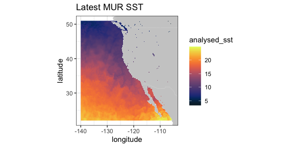
VIIRS SST and Chlorophyll
VIIRS (Visible Infrared Imaging Radiometer Suite) is a scanning radiometer, that collects visible and infrared imagery and radiometric measurements of the land, atmosphere, cryosphere, and oceans. VIIRS data is used to measure cloud and aerosol properties, ocean color, sea and land surface temperature, ice motion and temperature, fires, and Earth’s albedo. Both NASA and NOAA provide VIIRS-based high resolution SST and chlorophyll products.
ERD provides a 3-day composite SST product at 750 meter resolution developed from a real-time NOAA product. The most recent values can be obtained by setting “time” to be “last”. (Note that R sees the latitude-longitude grid as slightly uneven (even though it is in fact even), and that produces artificial lines in ggplot2::geom_raster(). In order to remove those lines, the latitude-longitude grid is remapped to an evenly-space grid.)
require("ggplot2")
require("mapdata")
require("rerddap")
sstInfo <- info('erdVHsstaWS3day')
# get latest 3-day composite sst
viirsSST <- griddap(sstInfo, latitude = c(41., 31.), longitude = c(-128., -115), time = c('last','last'), fields = 'sst')
# remap latitiudes and longitudes to even grid
myLats <- unique(viirsSST$data$latitude)
myLons <- unique(viirsSST$data$longitude)
myLats <- seq(range(myLats)[1], range(myLats)[2], length.out = length(myLats))
myLons <- seq(range(myLons)[1], range(myLons)[2], length.out = length(myLons))
# melt these out to full grid
mapFrame <- expand.grid(x = myLons, y = myLats)
mapFrame$y <- rev(mapFrame$y)
# form a frame with the new values and the data
tempFrame <- data.frame(sst = viirsSST$data$sst, lat = mapFrame$y, lon = mapFrame$x)
mycolor <- colors$temperature
w <- map_data("worldHires", ylim = c(30., 42.), xlim = c(-128, -114))
ggplot(data = tempFrame, aes(x = lon, y = lat, fill = sst)) +
geom_polygon(data = w, aes(x = long, y = lat, group = group), fill = "grey80") +
geom_raster(interpolate = FALSE) +
scale_fill_gradientn(colours = mycolor, na.value = NA) +
theme_bw() + ylab("latitude") + xlab("longitude") +
coord_fixed(1.3, xlim = c(-128, -114), ylim = c(30., 42.)) + ggtitle("Latest VIIRS 3-day SST")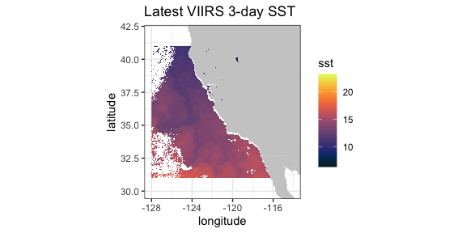
A time series from the same dataset at a given location, here (36., -126.):
require("ggplot2")
require("rerddap")
viirsSST1 <- griddap(sstInfo, latitude = c(36., 36.),
longitude = c(-126., -126.),
time = c('2015-01-01','2015-12-31'), fields = 'sst')
tempTime <- as.Date(viirsSST1$data$time, origin = '1970-01-01', tz = "GMT")
tempFrame <- data.frame(time = tempTime, sst = viirsSST1$data$sst)
ggplot(tempFrame, aes(time, sst)) +
geom_line() +
theme_bw() +
ylab("sst") +
ggtitle("VIIRS SST at (36N, 126W)")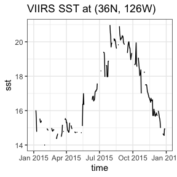
A similar 3-day composite for chloropyll for the same region from a scientific quality product developed by NOAA:
require("ggplot2")
require("mapdata")
require("rerddap")
chlaInfo <- info('erdVHNchla3day')
viirsCHLA <- griddap(chlaInfo, latitude = c(41., 31.),
longitude = c(-128., -115), time = c('last','last'),
fields = 'chla')
mycolor <- colors$chlorophyll
w <- map_data("worldHires", ylim = c(30., 42.), xlim = c(-128, -114))
ggplot(data = viirsCHLA$data, aes(x = longitude, y = latitude, fill = log(chla))) +
geom_polygon(data = w, aes(x = long, y = lat, group = group), fill = "grey80") +
geom_raster(interpolate = FALSE) +
scale_fill_gradientn(colours = mycolor, na.value = NA) +
theme_bw() + ylab("latitude") + xlab("longitude") +
coord_fixed(1.3, xlim = c(-128, -114), ylim = c(30., 42.)) +
ggtitle("Latest VIIRS 3-day Chla")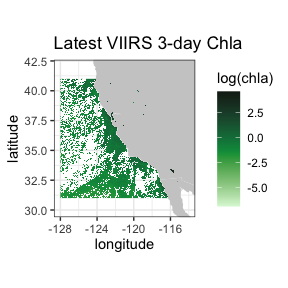
Temperature at 70m in the north Pacific from the SODA model output
This is an example of an extract from a 4-D dataset (results from the “Simple Ocean Data Assimilation (SODA)” model - see https://www2.atmos.umd.edu/~ocean/), and illustrate the case where the z-coordinate does not have the default name “altitude”. Water temperature at 70m depth is extracted for the North Pacific Ocean.
require("rerddap")
dataInfo <- rerddap::info('hawaii_d90f_20ee_c4cb')
xpos <- c(135.25, 240.25)
ypos <- c(20.25, 60.25)
zpos <- c(70.02, 70.02)
tpos <- c('2010-12-15', '2010-12-15')
soda70 <- griddap(dataInfo, longitude = xpos, latitude = ypos,
time = tpos, depth = zpos, fields = 'temp' )Since the data cross the dateline, it is necessary to use the new “world2Hires” continental outlines in the package mapdata which is Pacific Ocean centered. Unfortunatley there is a small problem where the outlines from certain countries wrap and mistakenly appear in plots, and those countries must be removed, see code below.
require("ggplot2")
require("mapdata")
xlim <- c(135, 240)
ylim <- c(20, 60)
my.col <- colors$temperature
## Must do a kludge to remove countries that wrap and mess up the plot
w1 <- map("world2Hires", xlim = c(135, 240), ylim = c(20, 60), fill = TRUE, plot = FALSE)
remove <- c("UK:Great Britain", "France", "Spain", "Algeria", "Mali", "Burkina Faso", "Ghana", "Togo")
w <- map_data("world2Hires", regions = w1$names[!(w1$names %in% remove)], ylim = ylim, xlim = xlim)
myplot <- ggplot() +
geom_raster(data = soda70$data, aes(x = longitude, y = latitude, fill = temp), interpolate = FALSE) +
geom_polygon(data = w, aes(x = long, y = lat, group = group), fill = "grey80") +
theme_bw() + scale_fill_gradientn(colours = my.col, na.value = NA, limits = c(-3,30), name = "temperature") +
ylab("latitude") + xlab("longitude") +
coord_fixed(1.3, xlim = xlim, ylim = ylim) +
ggtitle(paste("70m temperature ", soda70$data$time[1]))
myplot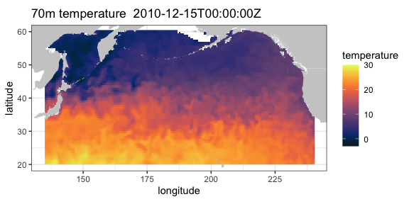
Irish Marine Institute
The Irish Marine Institute has an ERDDAP server at https://erddap.marine.ie/erddap. Among other datasets, they have hourly output from a model of the North Altantic ocean, with a variety of ocean related parameters, see the dataset IMI_NEATL. To obtain the latest sea surface salinity for the domain of the model:
require("rerddap")
urlBase <- "https://erddap.marine.ie/erddap/"
parameter <- "sea_surface_salinity"
sssTimes <- c("last", "last")
sssLats <- c(48.00625, 57.50625)
sssLons <- c(-17.99375, -1.00625)
dataInfo <- rerddap::info("IMI_NEATL", url = urlBase)
NAtlSSS <- griddap(dataInfo, longitude = sssLons, latitude = sssLats, time = sssTimes, fields = parameter, url = urlBase)and the extracted data plotted:
require("ggplot2")
require("mapdata")
xlim <- c(-17.99375, -1.00625)
ylim <- c(48.00625, 57.50625)
my.col <- colors$salinity
w <- map_data("worldHires", ylim = ylim, xlim = xlim)
myplot <- ggplot() +
geom_raster(data = NAtlSSS$data, aes(x = longitude, y = latitude, fill = sea_surface_salinity), interpolate = FALSE) +
geom_polygon(data = w, aes(x = long, y = lat, group = group), fill = "grey80") +
theme_bw() + scale_fill_gradientn(colours = my.col, na.value = NA, limits = c(34, 36), name = "salinity") +
ylab("latitude") + xlab("longitude") +
coord_fixed(1.3, xlim = xlim, ylim = ylim) +
ggtitle(paste("salinity", NAtlSSS$data$time[1]))
myplot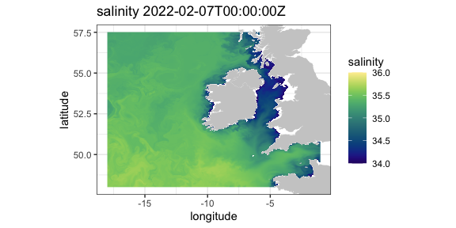
IFREMER
The French agency IFREMER also has an ERDDAP server. Here salinity data at 75 meters from “Global Ocean, Coriolis Observation Re-Analysis CORA4.1” model off the west coast of the United States is extracted and plotted.
require("rerddap")
urlBase <- "https://www.ifremer.fr/erddap/"
parameter <- "PSAL"
ifrTimes <- c("2019-05-15", "2019-05-15")
ifrLats <- c(30., 50.)
ifrLons <- c(-140., -110.)
ifrDepth <- c(75., 75.)
dataInfo <- rerddap::info("CORIOLIS_GLOBAL_NRTOA_OBS_TIME_SERIE_PSAL", url = urlBase)
ifrPSAL <- griddap(dataInfo, longitude = ifrLons, latitude = ifrLats, time = ifrTimes, depth = ifrDepth, fields = parameter, url = urlBase)The ggplot2 function geom_raster() is not designed for unevenly spaced coordinates, as are the latitudes from this model. The function interp() from the package akima is used to interpolate the data which are then plotted.
## ggplot2 has trouble with unequal y's
require("akima")
require("dplyr")
require("ggplot2")
require("mapdata")
xlim <- c(-140, -110)
ylim <- c(30, 51)
## ggplot2 has trouble with unequal y's
my.col <- colors$salinity
tempData1 <- ifrPSAL$data$PSAL
tempData <- array(tempData1 , 61 * 54)
tempFrame <- data.frame(x = ifrPSAL$data$longitude, y = ifrPSAL$data$latitude)
tempFrame$temp <- tempData
tempFrame1 <- dplyr::filter(tempFrame, !is.nan(temp))
myinterp <- akima::interp(tempFrame1$x, tempFrame1$y, tempFrame1$temp, xo = seq(min(tempFrame1$x), max(tempFrame1$x), length = 61), yo = seq(min(tempFrame1$y), max(tempFrame1$y), length = 54))
myinterp1 <- expand.grid(x = myinterp$x, y = myinterp$y)
myinterp1$temp <- array(myinterp$z, 61 * 54)
w <- map_data("worldHires", ylim = ylim, xlim = xlim)
myplot <- ggplot() +
geom_raster(data = myinterp1, aes(x = x, y = y, fill = temp), interpolate = FALSE) +
geom_polygon(data = w, aes(x = long, y = lat, group = group), fill = "grey80") +
theme_bw() + scale_fill_gradientn(colours = my.col, na.value = NA, limits = c(32, 35), name = "salinity") +
ylab("latitude") + xlab("longitude") +
coord_fixed(1.3, xlim = xlim, ylim = ylim) + ggtitle(paste("salinity at 75 meters",ifrPSAL$data$time[1] ))
myplot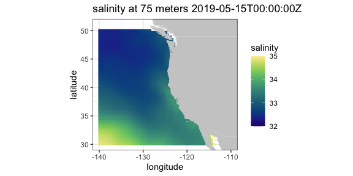
tabledap
CalCOFI data
CalCOFI (California Cooperative Oceanic Fisheries Investigations - https://calcofi.org) is a multi-agency partnership formed in 1949 to investigate the collapse of the sardine population off California. The organization’s members are from NOAA Fisheries Service, Scripps Institution of Oceanography, and California Department of Fish and Wildlife. The scope of this research has evolved into the study of marine ecosystems off California and the management of its fisheries resources. The nearly complete CalCOFI data, both physical and biological, are available through ERDDAP.
The following example is a modification of a script developed by Dr. Andrew Leising of the Southwest Fisheries Science Center. The original script has been used to automate the generation of several yearly reports about the California Current Ecosystem. The script gets chlorophyll data and a measure of primary productivity from the hydrocasts,and then calculates a seasoanlly adjusted chlorophyll anomaly as well as a seasonally adjusted primary productivity anomaly. The first step is to get the information about the particular dataset:
and then get the desired data from 1984 through 2014:
require("rerddap")
calcofi.df <- tabledap(hydroInfo, fields = c('cst_cnt', 'date', 'year', 'month', 'julian_date', 'julian_day', 'rpt_line', 'rpt_sta', 'cruz_num', 'intchl', 'intc14', 'time'), 'time>=1984-01-01T00:00:00Z', 'time<=2014-04-17T05:35:00Z')Both “intchl” and “intC14” are returned as character strings, and are easier to work with as numbers:
if (packageVersion('rerddap') < '1.1.0'){
calcofi.df$cruz_num <- as.numeric(calcofi.df$cruz_num)
calcofi.df$intc14 <- as.numeric(calcofi.df$intc14)
calcofi.df$time <- as.Date(calcofi.df$time, origin = '1970-01-01', tz = "GMT")
}At this point the requested data are in the R workspace - the rest of the code performs the calculations to derive the seasonally adjusted values and plot them.
require("dplyr")
# calculate cruise means
by_cruznum <- group_by(calcofi.df, cruz_num)
tempData <- select(by_cruznum, year, month, cruz_num, intchl, intc14)
CruiseMeans <- summarize(by_cruznum, cruisechl = mean(intchl, na.rm = TRUE), cruisepp = mean(intc14, na.rm = TRUE), year = median(year, na.rm = TRUE), month = median(month, na.rm = TRUE))
tempTimes <- paste0(CruiseMeans$year,'-',CruiseMeans$month,'-1')
cruisetimes <- as.Date(tempTimes, origin = '1970-01-01', tz = "GMT")
CruiseMeans$cruisetimes <- cruisetimes
# calculate monthly "climatologies"
byMonth <- group_by(CruiseMeans, month)
climate <- summarize(byMonth, ppClimate = mean(cruisepp, na.rm = TRUE), chlaClimate = mean(cruisechl, na.rm = TRUE))
# calculate anomalies
CruiseMeans$chlanom <- CruiseMeans$cruisechl - climate$chlaClimate[CruiseMeans$month]
CruiseMeans$ppanom <- CruiseMeans$cruisepp - climate$ppClimate[CruiseMeans$month]
# calculate mean yearly anomaly
byYear <- select(CruiseMeans, year)
tempData <- select(CruiseMeans, year, chlanom, ppanom )
byYear <- group_by(tempData, year)
yearlyAnom <- summarize(byYear, ppYrAnom = mean(ppanom, na.rm = TRUE), chlYrAnom = mean(chlanom, na.rm = TRUE))
yearlyAnom$year <- ISOdate(yearlyAnom$year, 01, 01, hour = 0)
ggplot(yearlyAnom, aes(year, chlYrAnom)) + geom_line() +
theme_bw() + ggtitle('yearly chla anom')
ggplot(yearlyAnom, aes(year, ppYrAnom)) + geom_line() +
theme_bw() + ggtitle('yearly pp anom')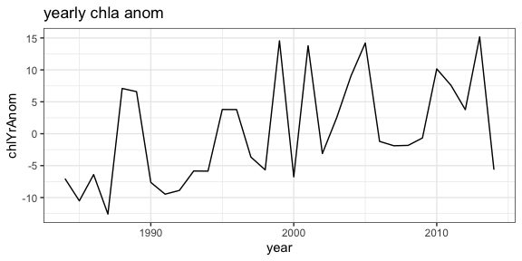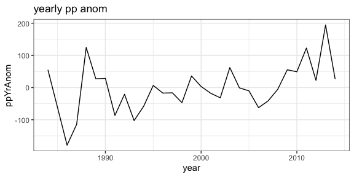
CPS Trawl Surveys
The CPS (Coastal Pelagic Species) Trawl Life History Length Frequency Data contains the length distribution of a subset of individuals from a species (mainly non-target) caught during SWFSC-FRD fishery independent trawl surveys of coastal pelagic species. Measured lengths for indicated length type (fork, standard, total, or mantle) were grouped in 10 mm bins (identified by the midpoint of the length class) and counts are recorded by sex.
The number and location of sardines (Sardinops sagax) in the tows in March 2010 and 2011 are extracted, and compared with monthly SST from satellites. First, query the ERDDAP server to see if CPS Trawl data are available through the ERDDAP server, and if so, obtain the datasetID for the dataset.
require("rerddap")
CPSquery <- ed_search(query = 'CPS Trawl')
CPSquery$alldata[[1]]$summary
CPSquery$alldata[[1]]$tabledap
CPSquery$alldata[[1]]$dataset_idThen get the information for the CPS dataset:
extract the desired CPS data:
require("dplyr")
require("rerddap")
sardines <- tabledap(CPSinfo, fields = c('latitude', 'longitude', 'time', 'scientific_name', 'subsample_count'), 'time>=2010-01-01', 'time<=2012-01-01', 'scientific_name="Sardinops sagax"' )
if (packageVersion('rerddap') < '1.1.0'){
sardines$time <- as.Date(sardines$time, origin = '1970-01-01', tz = "GMT")
sardines$latitude <- as.numeric(sardines$latitude)
sardines$longitude <- as.numeric(sardines$longitude)
}
sardines$time <- as.Date(sardines$time, origin = '1970-01-01', tz = "GMT")
sardines$latitude <- as.numeric(sardines$latitude)
sardines$longitude <- as.numeric(sardines$longitude)
sardine2010 <- filter(sardines, time < as.Date('2010-12-01'))and plot the data versus monthly SST values:
# get the dataset info
sstInfo <- info('erdMWsstdmday')
# get 201004 monthly sst
sst201004 <- griddap('erdMWsstdmday', latitude = c(22., 51.), longitude = c(220., 255), time = c('2010-04-16','2010-04-16'), fields = 'sst')
# get 201104 monthly sst
sst201104 <- griddap('erdMWsstdmday', latitude = c(22., 51.), longitude = c(220., 255), time = c('2011-04-16','2011-04-16'), fields = 'sst')
# get polygons of coast for this area
w <- map_data("worldHires", ylim = c(22., 51.), xlim = c(220 - 360, 250 - 360))
# plot 201004 sst on the map
sardine2010 <- filter(sardines, time < as.Date('2010-12-01', origin = '1970-01-01', tz = "GMT"))
sardine2011 <- filter(sardines, time > as.Date('2010-12-01', origin = '1970-01-01', tz = "GMT"))
mycolor <- colors$temperature
p1 <- ggplot() +
geom_polygon(data = w, aes(x = long, y = lat, group = group), fill = "grey80") +
geom_raster(data = sst201004$data, aes(x = (longitude - 360), y = latitude, fill = sst), interpolate = FALSE) +
scale_fill_gradientn(colours = mycolor, na.value = NA, limits = c(5,30)) +
theme_bw() + ylab("latitude") + xlab("longitude") +
coord_fixed(1.3, xlim = c(220 - 360, 250 - 360), ylim = c(22., 51.))
# plot 201104 sst on the map
p2 <- ggplot() +
geom_polygon(data = w, aes(x = long, y = lat, group = group), fill = "grey80") +
geom_raster(data = sst201104$data, aes(x = (longitude - 360), y = latitude, fill = sst), interpolate = FALSE) +
geom_point(data = sardine2011, aes(x = longitude, y = latitude, colour = subsample_count)) +
scale_fill_gradientn(colours = mycolor, na.value = NA, limits = c(5,30)) +
theme_bw() + ylab("latitude") + xlab("longitude") +
coord_fixed(1.3, xlim = c(220 - 360, 250 - 360), ylim = c(22., 51.))
p1 + geom_point(data = sardine2010, aes(x = longitude, y = latitude, colour = subsample_count)) + scale_colour_gradient(space = "Lab", na.value = NA, limits = c(0,80))
p2 + geom_point(data = sardine2011, aes(x = longitude, y = latitude, colour = subsample_count)) + scale_colour_gradient(space = "Lab", na.value = NA, limits = c(0,80))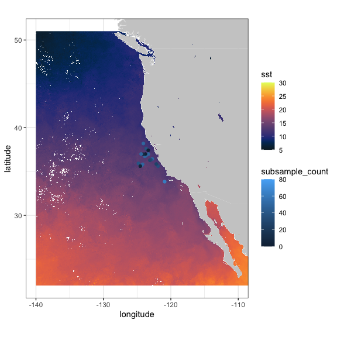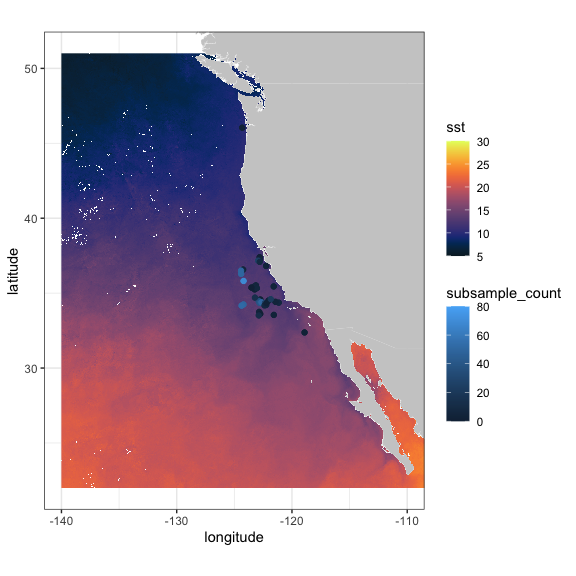
Also of interest is the distribution of sardines through the years:
sardinops <- tabledap(CPSinfo, fields = c('longitude', 'latitude', 'time'), 'scientific_name="Sardinops sagax"')
if (packageVersion('rerddap') < '1.1.0') {
sardinops$time <- as.Date(sardinops$time, origin = '1970-01-01', tz = "GMT")
sardinops$year <- as.factor(format(sardinops$time, '%Y'))
sardinops$latitude <- as.numeric(sardinops$latitude)
sardinops$longitude <- as.numeric(sardinops$longitude)
}
sardinops$year <- as.factor(format(sardinops$time, '%Y'))
xlim <- c(-135, -110)
ylim <- c(30, 51)
coast <- map_data("worldHires", ylim = ylim, xlim = xlim)
ggplot() +
geom_point(data = sardinops, aes(x = longitude, y = latitude, colour = year)) +
geom_polygon(data = coast, aes(x = long, y = lat, group = group), fill = "grey80") +
theme_bw() + ylab("latitude") + xlab("longitude") +
coord_fixed(1.3, xlim = xlim, ylim = ylim) +
ggtitle("Location of sardines by year in EPM Trawls")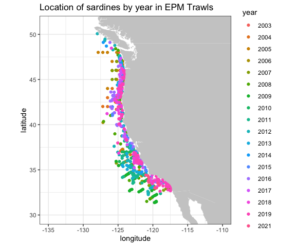
NDBC Buoys
NOAA’s National Data Buoy Center (NDBC) collects world-wide data from buoys in the ocean. ERDDAP can be searched for the location of all buoys in a bounding box with latitudes(37N, 47N) and longitudes (124W, 121W) and the results plotted:
# get location and station ID of NDBC buoys in a region
BuoysInfo <- info('cwwcNDBCMet')
locationBuoys <- tabledap(BuoysInfo, distinct = TRUE, fields = c("station", "longitude", "latitude"), "longitude>=-124", "longitude<=-121", "latitude>=37", "latitude<=47")
if (packageVersion('rerddap') < '1.1.0') {
locationBuoys$latitude <- as.numeric(locationBuoys$latitude)
locationBuoys$longitude <- as.numeric(locationBuoys$longitude)
}
xlim <- c(-130, -110)
ylim <- c(35, 50)
coast <- map_data("worldHires", ylim = ylim, xlim = xlim)
ggplot() +
geom_point(data = locationBuoys, aes(x = longitude , y = latitude, colour = factor(station) )) +
geom_polygon(data = coast, aes(x = long, y = lat, group = group), fill = "grey80") +
theme_bw() + ylab("latitude") + xlab("longitude") +
coord_fixed(1.3, xlim = xlim, ylim = ylim) +
ggtitle("Location of buoys in given region")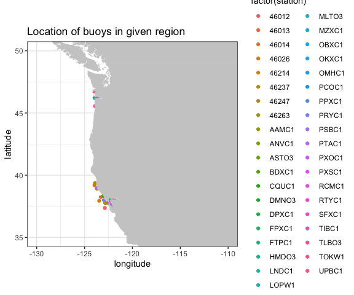
Looking at wind speed for 2012 for station “46012”
buoyData <- tabledap(BuoysInfo, fields = c("time", "wspd"), 'station="46012"', 'time>=2012-01-01', 'time<=2013-01-01')
if (packageVersion('rerddap') < '1.1.0') {
buoyData$wspd <- as.numeric(buoyData$wspd)
buoyData$time <- as.Date(buoyData$time, origin = '1970-01-01', tz = "GMT")
}
ggplot(buoyData, aes(time, wspd)) +
geom_line() +
theme_bw() +
ylab("wind speed") +
ggtitle("Wind Speed in 2012 from buoy 46012 ")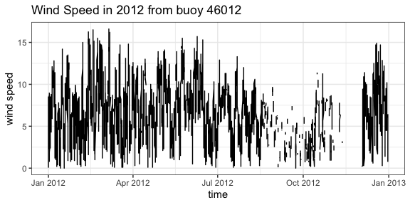
IOOS Glider Data
The mission of the IOOS Glider DAC is to provide glider operators with a simple process for submitting glider data sets to a centralized location, enabling the data to be visualized, analyzed, widely distributed via existing web services and the Global Telecommunications System (GTS) and archived at the National Centers for Environmental Information (NCEI). The IOOS Glider Dac is accessible through rerddap (https://gliders.ioos.us/erddap/index.html). Extracting and plotting salinity from part of the path of one glider deployed by the Scripps Institution of Oceanography:
urlBase <- "https://data.ioos.us/gliders/erddap/"
gliderInfo <- info("sp064-20161214T1913", url = urlBase)
glider <- tabledap(gliderInfo, fields = c("longitude", "latitude", "depth", "salinity"), 'time>=2016-12-14', 'time<=2016-12-23', url = urlBase)
if (packageVersion('rerddap') < '1.1.0') {
glider$longitude <- as.numeric(glider$longitude)
glider$latitude <- as.numeric(glider$latitude)
glider$depth <- as.numeric(glider$depth)
}
require("plot3D")
scatter3D(x = glider$longitude , y = glider$latitude , z = -glider$depth, colvar = glider$salinity, col = colors$salinity, phi = 40, theta = 25, bty = "g", type = "p",
ticktype = "detailed", pch = 10, clim = c(33.2,34.31), clab = 'Salinity',
xlab = "longitude", ylab = "latitude", zlab = "depth",
cex = c(0.5, 1, 1.5))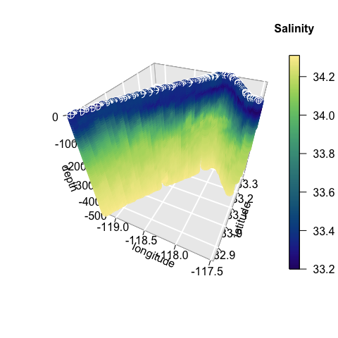
Animal Telemetry Network (ATN)
The Integrated Ocean Observing System Animal Telemetry Network (IOOS ATN) is designed to serve as an access point to search, discover and access animal telemetry data, and associated oceanographic datasets, from a wide variety of species and platforms. The track of one of the tagged animals is extracted, and plotted with SST value from satellite along the track.
atnURL <- 'https://oceanview.pfeg.noaa.gov/erddap/'
atnInfo <- info('gtoppAT', url = atnURL)
atnData <- tabledap(atnInfo, fields = c("time", "longitude", "latitude"), 'toppID="1807001"', url = atnURL)
atnData$latitude <- as.numeric(atnData$latitude)
atnData$longitude <- as.numeric(atnData$longitude)
ncdcSST = array(NA_real_, dim = length(atnData$time))
ncdcSSTInfo = info('ncdcOisst2Agg')
time_bound <- c(as.character(atnData$time[i]), as.character(atnData$time[i]))
for (i in 1:length(atnData$time)) {
extract <- griddap(ncdcSSTInfo,
fields = 'sst',
latitude = c(atnData$latitude[i], atnData$latitude[i]),
longitude = c(atnData$longitude[i], atnData$longitude[i]),
time = time_bound
)
ncdcSST[i] <- extract$data$sst
}
ylim <- c(32.5, 34)
xlim <- c(-119, -116.5)
mycolor <- colors$temperature
w <- map_data("worldHires", ylim = ylim, xlim = xlim)
alldata <- data.frame(sst = ncdcSST, longitude = atnData$longitude - 360, latitude = atnData$latitude)
z <- ggplot(alldata, aes(x = longitude, y = latitude)) +
geom_point(aes(colour = sst), size = .5)
z + geom_polygon(data = w, aes(x = long, y = lat, group = group), fill = "grey80") +
theme_bw() +
scale_colour_gradientn(colours = mycolor, limits = c(16.9, 17.3), "SST") +
coord_fixed(1.3, xlim = xlim, ylim = ylim) + ggtitle("SST Along Track")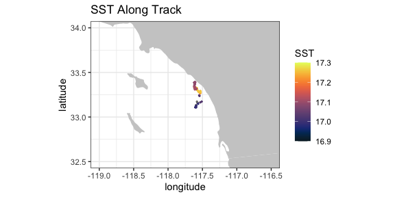
California Current System Integrated Ecosystem Assessment (CCSIEA)
The primary goals of the CCIEA are to better understand the web of interactions that drive patterns and trends of components within the California Current ecosystem, and forecast how changing environmental conditions and management actions affect the status of these components. The conceptual model of the social-ecological system of the California Current illustrates how humans and their social systems are inextricably linked to these marine, coastal, and upland environments (see (“www.integratedecosystemassessment.noaa.gov/regions/california-current/projects”).
The over 300 indices developed for the CCSIEA are available through rerddap. Here an index of coho abundance in California is compared with the February value of an index of the strength and location of the North Pacific High, developed in “The North Pacific High and wintertime pre-conditioning of California current productivity” by Schroeder et al. (Geophys. Res. Lett., 40, 541–546).
urlBase <- 'https://coastwatch.pfeg.noaa.gov/erddap/'
nphInfo <- info('erdNph', url = urlBase)
nphData <- tabledap(nphInfo, fields = c("year", "maxSLP" ), 'month=2', 'year>=1987', url = urlBase)
nphData$maxSLP <- as.numeric(nphData$maxSLP)
urlBase <- 'https://oceanview.pfeg.noaa.gov/erddap/'
cohoInfo <- info('cciea_SM_CA_CO_ABND', url = urlBase)
cohoData <- tabledap(cohoInfo, fields = c("abundance_anomaly", "time"), url = urlBase)
if (packageVersion('rerddap') < '1.1.0') {
cohoData$abundance_anomaly <- as.numeric(cohoData$abundance_anomaly)
}
alldata <- data.frame(coho = cohoData$abundance_anomaly[1:27], maxSLP = nphData$maxSLP, year = nphData$year)
ggplot(alldata) + geom_line(aes(x = year, y = coho), colour = 'blue') + theme_bw() + ggtitle("coho abundance anomaly")
ggplot(alldata) + geom_line(aes(x = year, y = maxSLP), colour = 'red') + theme_bw() + ggtitle("MaxSLP")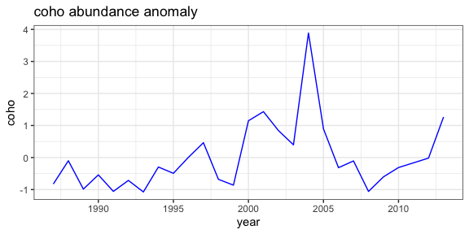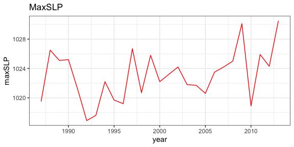
Cacheing, “last”, “now”, idempotency, and a gotcha
rerddap by default caches the requests you make, so that if you happen to make the same request again, the data is restored from the cache, rather than having to go out and retrieve it remotely. For most applications, this a boon (such as when “knitting” and “reknitting” this document), as it can speed things up when doing a lot of request in a script, and works because in most cases an ERDDAP request is “idempotent”. This means that the the request will always return the same thing no matter what requests came before - it doesn’t depend on state. However this is not true if the script uses either “last” in griddap() or “now” in tabledap() as these will return different values as time elapses and data are added to the datasets. While it is desirable to have ERDDAP purely idempotent, the “last” and “now” constructs are very helpful for people using ERDDAP in dashboards, webpages, regular input to models and the like, and the benefits far outweigh the problems. However, if you are using either “last” or “now” in an rerddap based script, you want to be very careful to clear the rerddap cache, otherwise the request will be viewed as the same, and the data from the last request, rather than the latest data, will be returned. Note that several examples in this vignette use “last”, and therefore the graphics may look different depending on when you “knitted” the vignette.
For help in dealing with the cache, see:
?cache_delete
?cache_delete_all
?cache_details
?cache_listReading data from a netCDF file.
Here we give a brief summary of how to read in part of the data from a netCDF file. The basic steps are:
- Open the netCDF file
- Map coordinate values to array indices
- Extract the data
A sample netCDF file, “MWsstd1day.nc” is included. This is a small file and is a toy example, but the basic principles remain the same for a larger file.
Open the netCDF file:
require("ncdf4")
#> Loading required package: ncdf4
exampleFile <- system.file("extdata", "MWsstd1day.nc", package = "rerddap")
sstFile <- nc_open(exampleFile)While it is possible to obtain the coordinate values by extracting them from the file, ncdf4 by default does so automatically in nc_open. The names of the coordinate dimensions can be found from:
names(sstFile$dim)
#> [1] "time" "altitude" "latitude" "longitude"(note that the coordinate names here are given in ‘C’ order, while for an extract the coordinates will be in the opposite, “Fortran” order) and the values of any coordinate, say longitude, can be found from:
sstFile$dim$longitude$vals
#> [1] 210.0000 210.0125 210.0250 210.0375 210.0500 210.0625 210.0750 210.0875
#> [9] 210.1000 210.1125 210.1250 210.1375 210.1500 210.1625 210.1750 210.1875
#> [17] 210.2000 210.2125 210.2250 210.2375 210.2500 210.2625 210.2750 210.2875
#> [25] 210.3000 210.3125 210.3250 210.3375 210.3500 210.3625 210.3750 210.3875
#> [33] 210.4000 210.4125 210.4250 210.4375 210.4500 210.4625 210.4750 210.4875
#> [41] 210.5000 210.5125 210.5250 210.5375 210.5500 210.5625 210.5750 210.5875
#> [49] 210.6000 210.6125 210.6250 210.6375 210.6500 210.6625 210.6750 210.6875
#> [57] 210.7000 210.7125 210.7250 210.7375 210.7500 210.7625 210.7750 210.7875
#> [65] 210.8000 210.8125 210.8250 210.8375 210.8500 210.8625 210.8750 210.8875
#> [73] 210.9000 210.9125 210.9250 210.9375 210.9500 210.9625 210.9750 210.9875
#> [81] 211.0000The names of the variables in the netCDF file can be found from:
names(sstFile$var)
#> [1] "sst"An extract is done by giving the pointer to the netCDF file (“sstFile” in this instance), the name of the variable ot be extracted (“sst” in this instance), the starting index value (in array coordinates) for each dimension, and the the count (the number of other index values) to include. If all values of a particular dimension are wanted, then “-1” can be used for the count. So for example to extract all of the values for the first day:
require("ncdf4")
day1SST <- ncvar_get(sstFile, "sst", start = c(1, 1, 1, 1), count = c(1, 1, -1, -1))Suppose we only want the latitudes from (30.0, 30.5) and longitudes (210.0, 210.5) for the first day. We need to find the array indices that match those coordinate values:
latMin <- which(sstFile$dim$latitude$vals == 30.0)
latMax <- which(sstFile$dim$latitude$vals == 30.5)
lonMin <- which(sstFile$dim$longitude$vals == 210.0)
lonMax <- which(sstFile$dim$longitude$vals == 210.5)and then extract the data:
require("ncdf4")
day1SST <- ncvar_get(sstFile, "sst", start = c(lonMin, latMin, 1, 1), count = c( (lonMax - lonMin + 1), (latMax - latMin + 1), 1, 1 ))If we wanted a time series at (30N, 210E) it would be:
require("ncdf4")
day1SST <- ncvar_get(sstFile, "sst", start = c(lonMax, latMin, 1, 1), count = c(1, 1, 1, -1 ))For this example, it is easy to visually peruse the dimension values but for a large extract this might not be the possible. Suppose we wanted all values in a latitude range or (30.1, 30.3) and since the range of values we are interested in might not be on a grid boundary we want the smallest range that would include these values (that is if not on the grid then the smallest value may be less than 30.1) and similarly for longitude, say (210.1, 210.3):
latMin <- max(which(sstFile$dim$latitude$vals <= 30.1))
latMax <- min(which(sstFile$dim$latitude$vals >= 30.3))
lonMin <- max(which(sstFile$dim$longitude$vals <= 210.1))
lonMax <- min(which(sstFile$dim$longitude$vals >= 210.3))and then perform the extract as before: